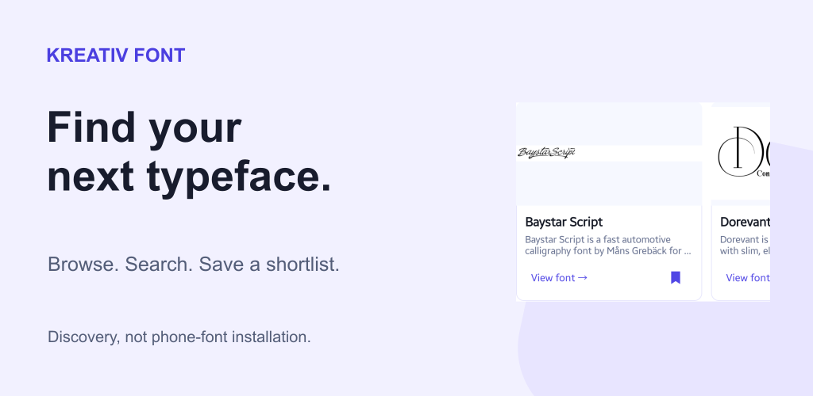
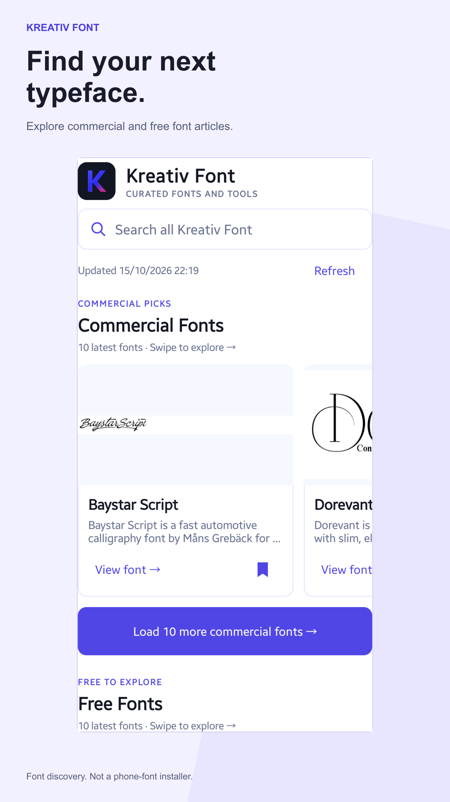
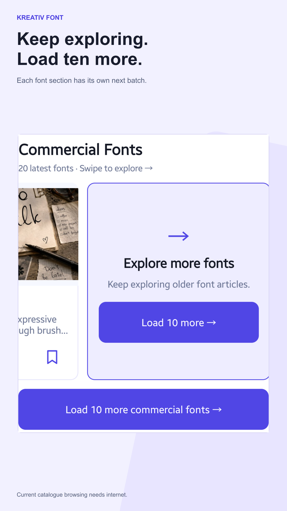
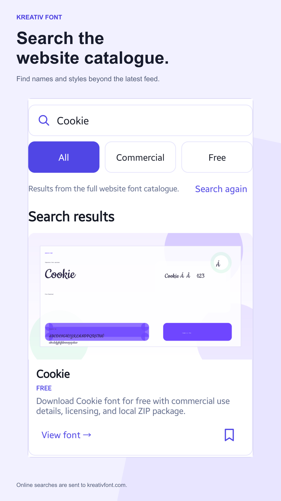
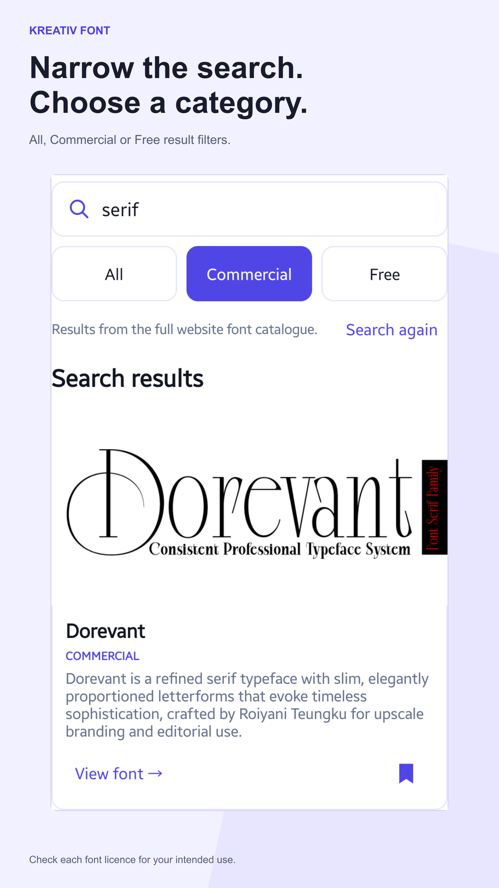
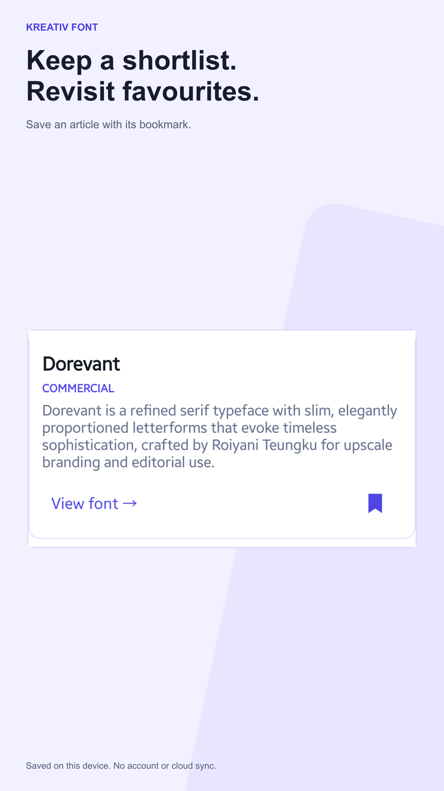
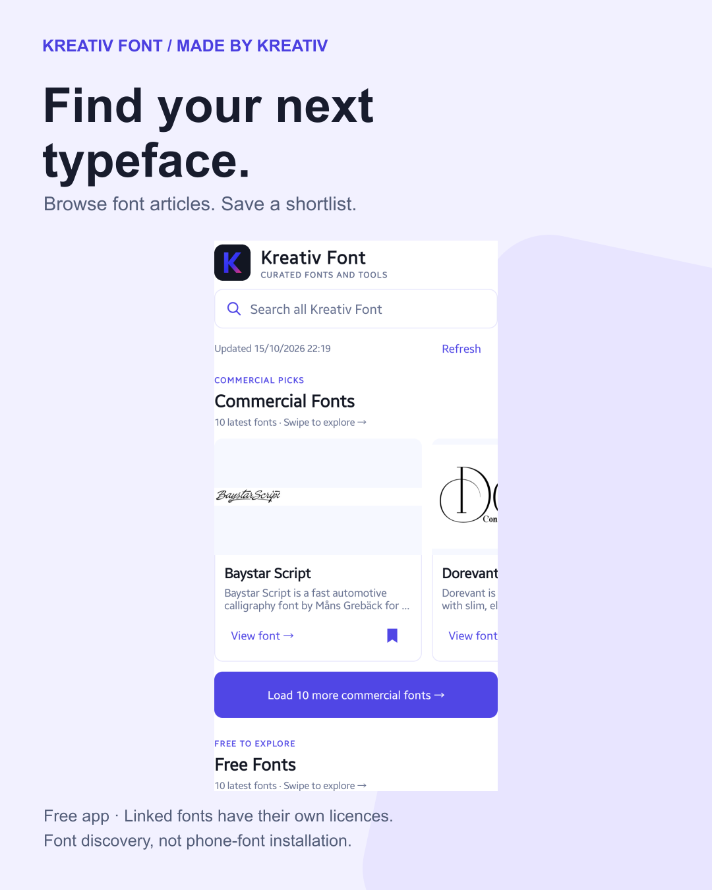
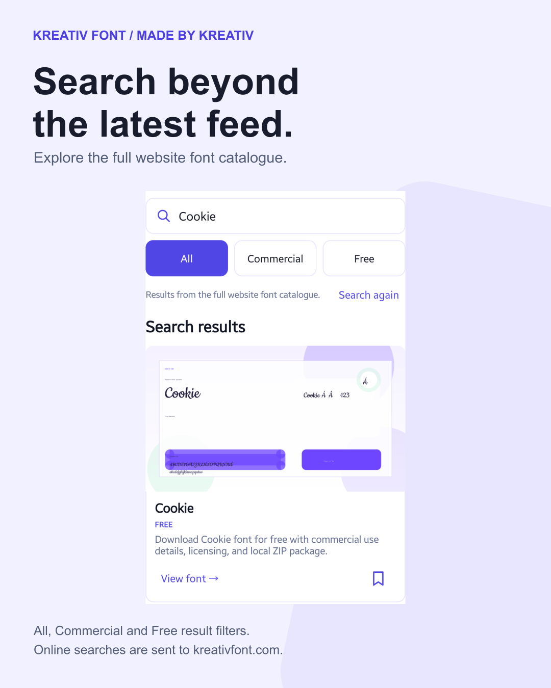
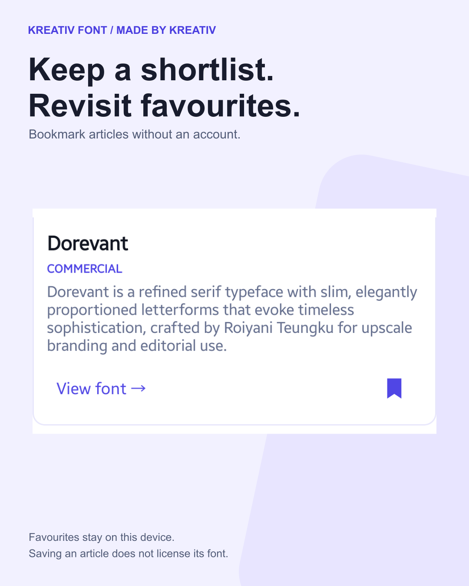

Made by Kreativ · Prepared 2026-10-18
Kreativ Font marketing and listing review
Find typefaces, inspect website artwork and save a shortlist. A refresh for the released 2.3.0 app.
Drafts only. Nothing uploaded, submitted, published or sent.
Keep the current name: Kreativ Font: Font Discovery. The app is free; linked fonts have their own prices and licences. It is not a phone-font installer, editor, identifier or custom-text tester.
Proposed store copy
Title 28/30 · Short 76/80 · Full 2783/4000 characters
Kreativ Font: Font Discovery
Search fonts, zoom previews and save favourites. Not a phone-font installer.
Find typefaces for your next design project with Kreativ Font, the free Android companion to kreativfont.com. Browse commercial and free font articles, inspect website preview artwork and keep a shortlist of favourites. This is a font-discovery app, not a font installer or text editor. It does not change your phone's system font, create lettering or install fonts into other apps. The app is free; linked fonts have their own prices and licence terms. BROWSE AND SEARCH - Explore separate Commercial Fonts and Free Fonts sections - Start with 10 recent articles in each section and use Load 10 more to continue - Search the full website font catalogue, not just the articles already loaded - Filter online results with All, Commercial or Free - Load more search results in batches of up to 10 unique fonts - Refresh the latest sections to check for newly published articles INSPECT THE PREVIEW Tap a preview image to open the website artwork full-screen. Pinch to zoom, drag to pan or double-tap to zoom or reset. Zoom in, Zoom out and Fit controls are also available. These are existing preview images, not a live type tester: you cannot enter your own text. Tap a font title to read its description, or View font to open its original article in your browser. KEEP A SHORTLIST Tap a bookmark to save a font to Favorites without creating an account. Saved entries retain their description and article link after they leave the latest feed. Search saved favourites locally on your device, and remove bookmarks when you no longer need them. Favourites are stored only on this device. Clearing app storage or uninstalling removes them; there is no cloud sync or account-based recovery. Previously loaded article information can be viewed offline, but preview images depend on the local cache. KNOW WHAT YOU ARE OPENING An internet connection is needed for current articles, online catalogue search and opening websites. Catalogue search sends your phrase to kreativfont.com; request URLs may appear in hosting logs. Avoid personal or sensitive details in searches. Searching saved favourites stays local. The native app has no advertising or analytics SDKs and does not request camera, photo-library, contact or location access. Website requests still involve hosting/CDN request data. Browser visits follow the destination website's own privacy, cookie and affiliate terms. Font downloads, prices and licences are handled by the linked websites, not inside the app. A Free label is not a promise of unrestricted commercial use. Read the publisher's licence for each font and intended use. The app interface and website articles are in English. Android app privacy: https://kreativfont.com/blog/terms-of-use-privacy-policy#android-app-privacy Support: contact@kreativfont.com
Feature graphic

Five screenshots in proposed order










Real app captures, cropped and scaled only. Artwork belongs to its creators. Bookmark states are actual capture states, not fabricated.
Three social graphics






Graphic 01 launch caption
Your next design can start with a font shortlist. I rebuilt Kreativ Font for Android to make the discovery part easier: browse commercial and free font articles, search the website catalogue, inspect preview artwork and save favourites without an account. The app is free. It is not a phone-font installer or text editor, and linked fonts have their own prices and licences. View font opens the original article in your browser. If you try it, tell me what would make finding your next typeface easier. — Andrei, Made by Kreativ https://play.google.com/store/apps/details?id=com.kreativ.fontapp&utm_source=launch_social&utm_medium=social&utm_campaign=kreativfont_discovery_202610&referrer=utm_source%3Dlaunch_social%26utm_medium%3Dsocial%26utm_campaign%3Dkreativfont_discovery_202610
All English and Romanian captions
Short screenshot tour
20 seconds, vertical and silent. App screenshots, not live footage.
Website tutorial and app page
The website already has a Kreativ Font app entry. The proposed tutorial needs a separate publication approval and validation.
Unsent editorial outreach
Android Authority editorial news desk
news@androidauthority.com — https://www.androidauthority.com/contact/
Official contact page checked 18 October 2026. News and paid advertising are separate routes; no placement is implied.
Kreativ Font 2.3 for a design-focused Android app roundup Hello, I develop Kreativ Font, a free Android companion to kreativfont.com. Version 2.3 adds full-catalogue search with Commercial/Free filters, paged browsing, zoomable website previews and on-device favourites. This is font discovery, not phone-font installation, text editing or font identification. Fonts remain subject to the linked publisher's price and licence. Searches are sent to the website; favourites are local. If this fits a design-focused Android roundup, I can provide genuine screenshots and a short workflow guide. There is no expectation of coverage or a positive review. Thanks, Andrei Made by Kreativ
Droid Life app tip
https://www.droid-life.com/contact/ — official contact form, apps/tips category where available
Official form and invitation for app tips checked 18 October 2026. Nothing submitted.
App tip: a free Android companion for discovering typefaces Hello, I'm the developer of Kreativ Font for Android. It browses and searches the font articles on kreativfont.com, opens existing preview artwork full-screen and saves a local shortlist without an account. The app is free, but linked fonts may be paid and have separate licences. It is not an installer or editor. Current catalogue access needs internet and font-article links open in the browser. If it fits your app coverage, I can share real screenshots and the released 2.3 workflow. No paid placement or positive review is requested. Thanks, Andrei
Typography or design workflow creator
Select a relevant creator and verify their own business-contact route before sending.
Reusable draft only; no individual recipient selected or verified.
A phone-based typeface discovery shortlist for design research Hello, I build Kreativ Font, a free Android companion to kreativfont.com for browsing font articles, searching the catalogue and keeping an on-device shortlist. It may fit a design-research workflow segment. It does not install fonts or test custom text. Linked publishers handle prices, downloads and licences. Website preview artwork remains credited to its creators. If relevant, I can send genuine app screenshots and a concise workflow. No positive review, placement or endorsement is expected. Thanks, Andrei Made by Kreativ
Next steps after approval
- Approve the retained name, copy and screenshot sequence.
- Review the 13 existing listing languages; do not replace them silently.
- Replace the old AI-assisted feature graphic with the approved new code-built asset and check each AI-label control.
- Submit only the approved listing changes.
- Publish and verify the tutorial before adding its URL to Play.
- Choose one existing social channel and approve the actual post.